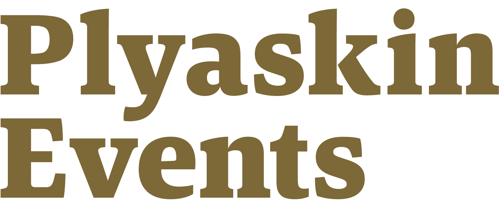

на Ink
на Slate
на Ash
assets/logo-plyaskin-events.png · 1716×738 · прозрачный фон · охра ≈ #806A34. Поверх Terra знак сливается с фоном — там используйте словесный знак «Частные балы». Векторной и монохромной версий нет.